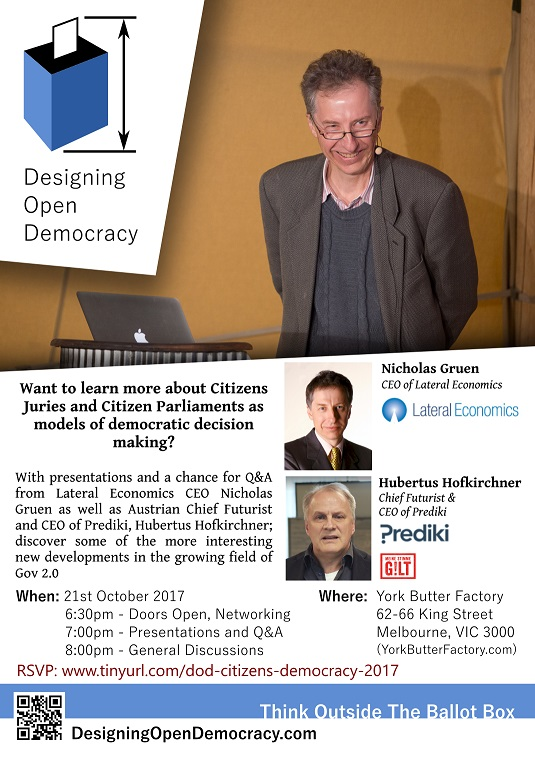
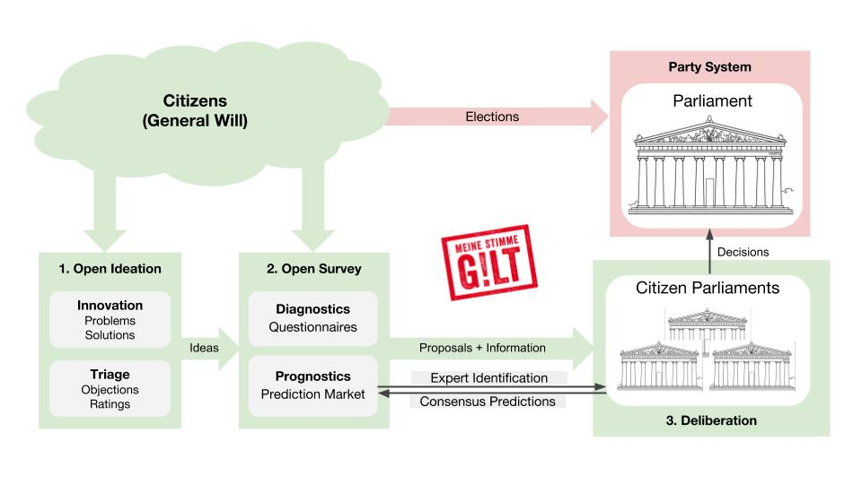

Citizens' Democracy; Presentations and Q&A (Monday, August 21 2017)
Historical: https://www.meetup.com/DesigningOpenDemocracy/events/243645818/

Audio Recordings (2 Hours):
Audio (.mp3): https://drive.google.com/open?id=0B_CxDJdeqkGMZERfSGJvMGFZSjA
- Written Notes: https://docs.google.com/document/d/1-gN-Cqj_KEvNPSLqN4BRWi2xy6Sd-0iBXq58Wd6G970/edit
-
Nicolas Gruen's lecture slides: https://drive.google.com/file/d/0BzE34qpoZvoIdXRscS1ZTGphTjg/view
-
Hubertus Hofkirchner slide showing how Prediki works from a systems perspective:

Audio Timestamp Summary:
- 00:00:00 : Designing Open Democracy Intro
- 00:03:08 : Nicholas Gruen Introduction
- 00:27:04 : Huburtus Hofkirchner
- 00:53:43 : QA Starts Here
- 00:54:11 : Question: How do you introduce this idea to the general public?
- 00:56:49 : Questions: What sort of result do you need in the next election, before you can demostrate to the public that this system can work?
- 00:57:21 : Question: Is there an algorithm to help select a citizen juries to make it as representative as possible?
- 01:01:54 : Question: Have you heard of any kind of meriocratic appointment system?
- 01:07:42 : Question: How would your system avoid corruption and manipulation?
- 01:14:07 : Nicholas Gruen & Huburtus Hofkirchner brief debate
- 01:24:25 : Question: Citizens can deal with issues, but are they dealing with the right issues?
- 01:27:37 : Questions: How will citizen juries work within existing systems?
- 01:30:40 : Question: How do you hold your citizen juries party representative accountable?
- 01:36:39 : Question: Are you suggesting to have citizen juries replace the senate?
- 01:43:54 : Question: Host noted a question from a previous event. What are the main factors for the acceptance of citizen juries? Did the press humanise the citizen juries members?
- 01:44:57 : Nicholas Gruen's difference to Ian Walker's New Democracy approach
- 01:48:05 : Event conclusion speech
Audio Timestamp Detailed Breakdown
- hh:mm:ss : Description
- 00:00:00 : Designing Open Democracy Intro
- 00:00:41 : General Intro to Huburtus
- 00:01:09 : General Intro to Nicholas
- 00:01:50 : End of sub 2 min general introduction
- 00:03:08 : Nicholas Gruen Introduction
- 00:05:03 : vox pop democracy
- 00:07:04 : 2013 Australian Election
- 00:07:22 : Current human biology have not evolved much from the past
- 00:07:48 : We evolved to like sweet high energy food which is close to good food at the time but in modern times is now junk food
- 00:08:08 : The current trouble happening in democracy, is because we are getting exactly what we are asking for.
- 00:09:23 : One of the fundamental issues of democracy is to navigate the cognitive division of labor.
- 00:10:54 : In the world of politics there is no rational reason for us to vote at all personally
- 00:11:11 : Politics is essentally ran by emotive force
- 00:13:43 : Cultural Politics
- 00:14:12 : Nicholas Gruen shows a UK poster to illustrate bad media coverage
- 00:14:29 : Media example of Australia Media coverage of Indonesia execution of Australian drug smugglers in comparison to how the media covers Indonesian drug smuggler caught in Australia.
- 00:15:57 : Cognitive Elites
- 00:16:24 : This can be done via election or via lot (random selection)
- 00:16:41 : Election is a recent idea around the french revolution
- 00:17:32 : Election is a competitive process and aristocratic
- 00:17:58 : While democratic, how representative is the elected politicans to their population
- 00:18:22 : Here we have a unitary system where people main problem is try to get to an agreement
- 00:18:29 : In a jury your job isn't to beat anyone its to come to a conclusion
- 00:18:44 : Juries is democratic in the sense of equality of speech not freedom of speech
- 00:19:05 : Pauline hanson is an authentic voice
- 00:19:38 : Adelate citizen juries example
- 00:21:19 : 18th and 19th century about setting up checks and balances, between lower house representing the people and upper house representing property rights
- 00:21:34 : Now in modern times we should do checks and balances between the people represented by elected representives and the people represented as themselves in a jury
- 00:23:19 : The magic trick/myth is that the reason for current troubles is because the pollies are the letting us down or are the bad guys.
- 00:27:04 : Huburtus Hofkirchner
- 00:27:21 : Huburtus Hofkirchner introduction
- 00:28:29 : Huburtus Hofkirchner background as an investment banker
- 00:28:56 : The idea of Prediki started around the time of the internet bubble
- 00:31:01 : Austrian Economics thought that with proper processes a collective intelligence can form
- 00:32:26 : Iron law of oligarchy. Michels' theory states that all complex organizations, regardless of how democratic they are when started, eventually develop into oligarchies.
- 00:34:11 : mechanic of prediki
- 00:34:42 : Prediki people have to first bet on outcome of a decision, which switchs a different mode of thinking
- 00:35:18 : Prediki also prompts users to specify reason for their decision
- 00:36:27 : Sentiment Analysis
- 00:36:45 : Prediki then dissects the arguments into graphs of sentiments to an issue, as well as breakdown on reasons for such sentiment
- 00:38:00 : "Brexit Example: Most google search after the vote is ""what is the EU?"""
- 00:39:52 : Simililarties and difference towards Nicholas Gruen's proposal
- 00:40:29 : What is the biggest motivator for people to participate in democracy?
- 00:41:27 : Many public concerns are ignored because pollies think the public is too stupid to decide anything
- 00:42:19 : Attempts to proposed this system to traditional political parties was unsuccessful
- 00:44:11 : Showed a slide about prediki system map
- 00:45:32 : Using algorithms to determine the breakdown of opinions
- 00:47:01 : Breaking down misconception of stupidity of the masses
- 00:47:41 : Finding domain knowlegable people via algorithms
- 00:49:37 : Allowing for specialisation
- 00:50:03 : Citizen juries allows for increased political bandwith
- 00:50:58 : End of presentation warning
- 00:51:46 : How did Huburtus Hofkirchner's party go in the election?
- 00:52:32 : What he learnt to improve chances for the next election
- 00:53:06 : Face it, no one is interested in democracy. Everyone assumes it works
- 00:53:43 : QA Starts Here
- 00:54:11 : Question: How do you introduce this idea to the general public?
- 00:55:05 : Huburtus Hofkirchner response
- 00:56:49 : Questions: What sort of result do you need in the next election, before you can demostrate to the public that this system can work?
- 00:57:07 : Huburtus Hofkirchner Response
- 00:57:21 : Question: Is there an algorithm to help select a citizen juries to make it as representative as possible?
- 00:57:37 : Huburtus Hofkirchner Response
- 00:58:27 : Geelong citizen juries example
- 01:01:54 : Question: Have you heard of any kind of meriocratic appointment system?
- 01:03:51 : Nicholas Gruen - athenian used elections for army commanders
- 01:04:45 : Huburtus Hofkirchner Adds
- 01:07:42 : Question: How would your system avoid corruption and manipulation?
- 01:08:29 : Nicholas Gruen Responses
- 01:12:15 : Huburtus Hofkirchner Adds
- 01:14:07 : Nicholas Gruen & Huburtus Hofkirchner brief debate
- 01:14:10 : Nicholas Gruen starts
- 01:15:17 : Huburtus Hofkirchner
- 01:16:37 : Nicholas Gruen
- 01:17:52 : Huburtus Hofkirchner - on prediction market
- 01:20:41 : Nicholas Gruen
- 01:21:14 : Huburtus Hofkirchner
- 01:23:23 : Nicholas Gruen
- 01:24:25 : Question: Citizens can deal with issues, but are they dealing with the right issues?
- 01:25:29 : Huburtus Hofkirchner Respond
- 01:27:37 : Questions: How will citizen juries work within existing systems?
- 01:28:23 : Huburtus Hofkirchner Responsed
- 01:30:40 : Question: How do you hold your citizen juries party representative accountable?
- 01:31:53 : Huburtus Hofkirchner Respond
- 01:35:27 : Nicholas Gruen Adds
- 01:36:39 : Question: Are you suggesting to have citizen juries replace the senate?
- 01:37:02 : Nicholas Gruen Responds
- 01:43:35 : Slow Democracy
- 01:43:54 : Question: Host noted a question from a previous event. What are the main factors for the acceptance of citizen juries? Did the press humanise the citizen juries members?
- 01:44:30 : People in general think elections are kind of like auctions
- 01:44:57 : Nicholas Gruen's difference to Ian Walker's New Democracy approach
- 01:48:05 : Event conclusion speech
Designing Open Democracy : Citizens’ Democracy - Presentations and Q&A
Presenters:
- Nicholas Gruen
- Huburtus Hofkirchner
Nicholas Gruen’s Presentation:
“Detoxing Democracy: is there a simple solution to a complex problem?”
Global Context
-
2008 Obama elected, economic crisis, policy brainstorming session (anyone policy suggestion - internet mediated democracy)
-
- Legalise marijuana,
-
- Released Obama’s birth certificate,
-
- Info/Conspiracies about aliens
-
-
‘Vox pop’ democracy: finding what people think before they think
- Brexit predicated on idea of wanting to do a deal?
- Trump, “nothing like anything we’ve ever seen before, sociopathic presumably, disorganised mentally
Australia Situation
- Living in upshot of Aus parliament 2013 after elections
- blasting away of difficult policy consensus over 15 years - Carbon tax (10 billion p/y)
- most parliamentarians against it, 80-90%
Analogy: society being optimised for things evolved on African Savannah - applies to industry, aspects of our lives - liked clean food, rich in fat, sweet - getting exactly what we’re asking for vs “nasty poiticians”
Joseph Schumpeter (Austria), 1943
1.Division of cognitive labour - fundamental issue: navigate division of labour - essentially: simple orgs have to break themselves up 2.Engine of engagement: emotion - no rational reason to vote, infinitismal chance to influence to vote - politics run by emotion - ’feminine emotions’: bind together from within - ’masculine emotions’: ‘ill’, emotion for many, reason for the few - balance of emotions:
It was quite a joy to hold the little kids hands and watch them smile ~~~ Naval Commander
We decide who comes here and the terms that they come ~~~ John Howard
Consequence:
- ~1989 only soundbites get through
- ’politics as culture war’, strengthened by press (plays on emotions)
- vignette: Indonesion smuggler - contrast of Daily Telegraph’s contradictory position
What kind of emotions, look at origins
- Deliberative: representation
- by election
- by lot
- Schumpeter’s view: not everyone can have a view about everything
- Before French Rev = by lot
- By election
- Competitive: cannot be a politician w/o using other politicians
- Aristocratic
- by lot
- Unitary (problem: come to agreement, conclusion)
- Democratic (greek word for ‘equality of speech’)
e.g. people heard more through Pauline Hanson
Citizen Jury
- People on citizen juries report the experience as a good one
- Design proposal to implement Citizen Juries in Australia
- upper house: By lot (vs by property)
- lower house: By election (vs by people)
- the path
- political activism; philanthropy, crowdfunded; people’s chamber chosen by lot
Vox pop democracy
- magic trick: politicians ‘bad guys’ responsible for ‘dirty policy’
- Joe Trippi, The revolution will not be televised (2008)
- idea: we the people need to take the charge (political activism)
Co-founder of Medium, ‘hype hype hooray cycle’ - idea: app lowers transaction, brings people in * proposal: need more transaction cost
Solutions people want to build introduced for other problems
Huburtus Hofkirchner
Story of past 3 months, group in Austria - more direct participation of citizens in parliament
Background: invest banker in IT space, founded first online brokerage, become CEO of Austrian telecom company, serial entrpreneur
Prediki founded in time world was mad (tech bubble), internet companies founded by media companies worth more than established media
Issues he aims to solve
People say what they think before they think e.g. stock exchange, before elections - people don’t change - still vote same people
Thus he started the Prediki project.
It aims stop collective madness - school of economics: put proper processes; collective intelligence - give tools that don’t produce madness, raise collective intelligence - unlike existing: Twitter, Facebook create mobbing behaviour
New Demarki: should not have party democracy - ’agency problem’-‘iron law of oligarchy’: eventually serves not original mission but the people running it * these people will fall, but they will fall with Atom bombs
Prediki, is a software that allows for sentiment analysis on rate of comments; dissection of arguments - People don’t just say their opinion, they have to set a bet (with virtual currency) on their certainty. * If asked after bet to give reason; Most will exhibit ‘post-rationalisation’
Current issue in modern politics is that people expected to be dissatisfied; yet voted the same; think after election it will be better: - This is due to post-rationalisation leading to: * people argued more * people most disatisfied because everything will remain the same
Austrian economics group: Denmarki - instead of representation (oligarchy)
-
Google: After the british people voted for Brexit. Google statistics showed a spike in the search term “what is the EU”?
-
Greek national television: lady interviewed “no idea what will happen”, limited capacity to ask
Best tool is citizen juries + open-phase of survey/inquiry in deliberative format
- What is the biggest motivator for people to participate in Democracy?
- what they say/decide actually matters; decisions actually being implemented
- politicians think people are to stupid to decide
- Wanted to worked with existing political parties, {citizen’s}(German word) parliaments; However was rebuffed Refusal is likely due to politician/decision maker’s fear of being put out of work.
- GI!LT is a "Kiss my backside” party to get this new form of goverance in.
- Existing governance pardigram:
- Vote every 5 years, 1-2 months politicians care about what people think as mob
Proposal by GI!LT party
- Open Ideation
- everyone involved in ideation phase
- voting system where every problem/solution, calculate index from suggestions - ideas on top w/ little objections
- Open Survey (diagnostics, prognostics - prediction market) *problem: ask in 5 minutes, people biased
- ”people think 90% of people think other people more incompetent than themselves”
How will Prediki software work?
Prediki to find competent people: people better in predicting, better decision makers - ’Super Forecasting’ book, Tetlock * Hedgehogs vs Foxes (knows many tricks, better decisions) - ”Everybody is good at something”; one or two particular things * no need to restrict capacity * right people to right parliament - e.g. Which democratic system will win, which topic parties should address * better than parties not yet in parliament * “Nobody interested in democracy. Everybody assumes it works”
Q&A Session
Q: People aren’t engaged; not aware they’re not in democracy; media doesn’t tell them their choices. How to get to people if not aware of?
A: cannot blame media, party system & media same interest (emotion)
Thus the solution may be: as deliberative democrats, not just propose deliberative democracy, conduct citizen juries (3-5) - communicate people’s will on issues, media will write about it
Q: What sort of result would you need in the next elections before you can get a representative into parliament to demonstrate
- A: 4%, already obtained 1%
Q: Is there an algorithm for selecting a citizen’s jury - as representative as possible?
-
A:
- eg Melbourne citizen’s jury, financial planning jury, Ian Walker
- Council 5k invitations, 500 interested, random draws ; good outcome for Melbourne council (voted on relevant issues)
-
Survey phase; in addition to people who volunteered, preselect good decision makers
- Representative of good decision makers
Q: Theory looks at whole of Government, functions in terms of getting things done. Problem in respect to democracy: parties, representatives, bureaucracy.
Proposal: instead of parties, elect people to perform specific functions. People would elect based on experience.
- A: (Nick): US ‘hanging judges’. Atheneans used merit for military (not other situations).
- A: (Hubert): statician, drawing of lots. Socrates: statistician not good principle. Media today: election of person. Economics today: we decide by what we buy, consequently the inventor of what we buy. Elect solution irrespective of person (elect on merit of solution); party election based on person - too much about faces.
Q: About interest groups. Concern: parties doing things in interest of big donors, gamers of ‘the system’ i.e. manipulation, corruption. How would you stop that in your proposal?
-
A: (Nick): stronger discipline on funding. Manipulation still possible / will happen - build system so that ‘bad apples’ don’t. Citizen’s jury - aren’t incentives to favour particular interests.
- Transparency, anyone can inspect process e.g. Electoral process.
- This is via Scrutineers, interested parties on both sides. They have the ”Right to clambour over the process by which those people are chosen on the jury”
- Sufficiently simple, and technical for our society; take into account contextual factors
-
A: (Huber):
- interest groups know how to buy politicians, very hard to follow the money
- unlike Citizen’s jury
Short Debate
-
Nick: Question - No way to make predictions about what is the case
-
Huber: Answer - best captured by measurement, ‘what will be’
- what shall be” - best answered by citizen juries. (to be put in people’s value judgement)
- will, prediction market
- what is, questionaires
-
Nick: Claim - very difficult separate high and low quality arguments. Predicting the future not the same as indicating what one’s values are.
-
Huber: Response - no such thing as ‘this prediction market’ as much as there isn’t ‘this ...‘
- most stuff crap,
- Prediki is able to distinguish arguments (eg Education, system does find best argument, text-analysis algorithms)
- Important how you do it
-
Nick: Question - If you have a campaign, people will flood onto your platform. How do you deal with that?
- Huber: Answer - openness, by betting
- report proves that you can document empirically that the outcome is extremely representative of the general expectation -Nick: Can you explain how the prediction market works to do that? -Nick: Can you explain what you mean this is calibrated against prediction? -Huber: Answer - reflexive system (e.g. How often do you exceed the speed limit)
Q: Who will be asking the questions? Politican make everyone look ‘over there’ whilst something else is happening. Can deal with issues, but something else might be happening?
- A: (hubert): Citizen’s jury q - which are the important subjects?
- World Cafe style into tables, in depth
Q: If you manage to get a representative into parliament, how is it going to work with the normal representative, they’re assumed to be an autonomous actor in the parliament
- A: (Hubert): Parliamentarians should speak their own mind and not be bound by anything. Bringing that back for citizens. Representatives do that already. Party leadership - don’t bote accordingly, they won’t be on the list the next time. Parliament already undermined.
- before simple, nowadays work in communities, goes back to party, goes back to parliamentarians.
- nobody voting according to their own, because of complexity
Q: G!lt’s representative placed in parliament, elected on assumption to follow through on system. No way in current workings in government they follow the consensus.
-
A: You can police it. Those people put in parliament must commit, put into writing.
-
- people sign declaration, oath
-
- Their vote what representative citizens decided (e.g. South Australia, nuclear cycling jury)
- 70% don’t trust government to decide it
- minister’s response: only 300 people, not representative. Wanted emotion-driven media referendum.
-
-
Nick: “We agree about the moral, but we’re not sure about the facts”
Q: Not sure about the difference between Nick’s and Hubertus’ proposal
-
A: citizen’s chamber to be a part of parliament, senate
- chamber govern’s itself with a 51%-49%
- 3 month delaying power; incentive to take seriously (House of Lord’s in UK)
- ramp up power w 60/65% majority
- Carbon price ‘line ball’ thing
- Section 57 of constitution, ‘joint sittings’
- Like war: the fact you can end up in one, you want to avoid it = government wants to court opionions of the people
-
Politicians terrified of people, trying to give everything they want
- sit in committee (eg sitting in Gaven Nuseman, California)
- the wrong Bogeyman, low saleries, got into game due to set of ideological ideas, trying their best
- “in poltical combat, the considered opinion of the people amounts to nothing unless if you consider it properly”
-
we have to face up to the fact that the system does give something close to the will of the people, there’s something [off] about that
-
Comment (Nick Merange): Ian Walker, opportunity for people to see people on citizen juries were like them; humanised.
-
Comment (Nick): If you go into democratic election and say what I’ve said or Hubert’s said, it doesn’t ‘cut the mustard’
-
Difference with Ian Walker, I want to use citizen’s juries as form of political activism
- vs New Democracy; citizens jury for specific problem
- eg Oregan, 2011, people got into constiution mechanism where citizen’s initiated referundum (also in their constituion) accompanied by citizen’s review - 300 words how they’re going to vote, how they argue one way or the other
-
Proposition 73 - classic example of vox pop democracy, result: 70% to 56%
Mailout
Hi everyone,
Brian, Christian and I will be planning the short and medium term future for Designing Open Democracy - the key question will be how to best advocate for interaction between the stakeholders involved in reforming or developing democracy with activity or projects.
In the spirit of 'openness', the meeting is open to anyone who wants to help contribute!
Thanks to all who were able to attend the Citizens' Jury Event! Presentations were interesting and we thank Nick Gruen and Hubertus Hofkirchner for presenting their proposals to improve democracy. If you missed out, there's a youtube video of Nick Gruen's presentation here (https://www.youtube.com/watch?v=0G55N7kdZJY) (and the slides from his presentation are here (https://drive.google.com/open?id=0BzE34qpoZvoIdXRscS1ZTGphTjg)), a link to the recorded podcast from the night (https://drive.google.com/open?id=0B_CxDJdeqkGMZERfSGJvMGFZSjA), and the Open Google Doc with the notes we took (https://docs.google.com/document/d/1-gN-Cqj_KEvNPSLqN4BRWi2xy6Sd-0iBXq58Wd6G970/edit?usp=sharing).
We'd love to get your feedback on this, so please let us know if you find this post-event media useful, and what areas could be improved for next time!
In any case, we'd be interested to get your thoughts on how Designing Open Democracy can help reduce the gap between democracy reformers and other key stakeholders.
Hope to see you there!
Nick
Second meet
After the above presentation, the next one was a strategy meeting. Where most importantly we have a spreadsheet of known democracy related organisation:
https://docs.google.com/spreadsheets/d/19UvMGGh92CF1m1xv5qyDh8OS0_aPCmr7xGxG8BeKKxA/edit#gid=327017318
Historical: https://www.meetup.com/DesigningOpenDemocracy/events/244826378/
Second Mailout
Hi Everyone, thanks for those who were able to make it!
At this stage, and resulting from the meetup, we are creating an accessible database of the democracy reform ideas out there, with a view that this could be a valuable resource for people to search for the appropriate idea for their situation or needs, and maybe help spark renewed debate and collaboration between groups and ideas.
Feel free to add any that we've missed or to flesh out the descriptions of these ideas here!: https://docs.google.com/spreadsheets/d/19UvMGGh92CF1m1xv5qyDh8OS0_aPCmr7xGxG8BeKKxA/edit?usp=sharing
We plan to post this on our website in an accessible format, but we need the info first! We also hope to make contributing and viewing more user friendly than google docs, so if anyone can help us with creating and maintaining a dynamic website, please let us know!